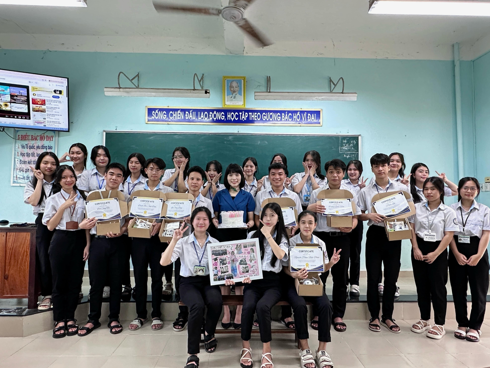
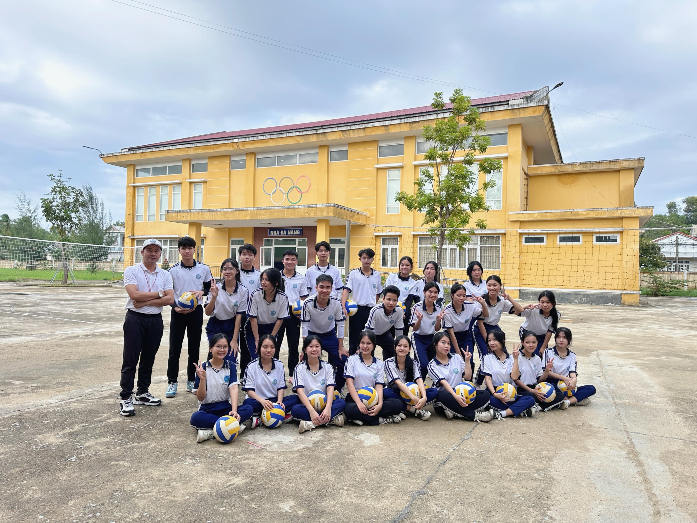

"Trân trọng hôm nay, Vững bước ngày mai!"
Khi giới trẻ bước ra đời bằng những bước chân đầu tiên, đó là một hành trình đầy cảm xúc và trải nghiệm. Đó là giai đoạn mà họ rời xa cái kén an toàn của gia đình, trường học để đối mặt với thế giới thực tế ngoài kia. Mỗi bước đi là một cuộc hành trình khám phá, nơi họ bắt đầu học cách tự lập, đưa ra quyết định và chịu trách nhiệm về lựa chọn của mình. Cảm giác hồi hộp, phấn khởi khi nhìn thấy trước mắt những cơ hội mới và khát khao cống hiến, thể hiện bản thân là động lực mạnh mẽ.
Chính trong thời điểm này, giới trẻ phải đối diện với những thử thách đầy cam go: tìm việc làm, xây dựng mối quan hệ xã hội, hoặc đơn giản là tự tạo dựng một cuộc sống độc lập. Họ có thể phải đối mặt với những sai lầm, thất bại và cảm giác bối rối khi không biết phải đi đâu hay làm gì. Nhưng cũng chính từ những khó khăn đó, họ học được sự kiên nhẫn, khả năng thích nghi và trưởng thành hơn trong suy nghĩ. Mỗi lần vấp ngã là một bài học quý giá giúp họ mạnh mẽ hơn, tự tin hơn vào bản thân và con đường mình đã chọn. Những bước chân đầu tiên đó, dù gian nan nhưng lại là bước đệm vững chắc để họ tiến về phía trước, tiếp tục chinh phục những mục tiêu và ước mơ trong cuộc sống.
|  |  |
Khi thấy mình lớn hẳn là lúc chúng con nhận ra biết bao yêu thương, lo âu của thầy cô cho những cô cậu học trò bé nhỏ của mình.Thầy cô chẳng những cho chúng con tri thức mà còn dạy cho chúng con cách sống, cách làm người, chắp cánh cho những ước mơ chúng con bay cao, bay xa. Xin cảm ơn các thầy các cô đã dìu dắt chúng con, đã chỉ cho chúng con biết những điều hay lẽ phải trong cuộc sống, dạy chúng con biết yêu thương, biết chia sẻ và đồng cảm. Cảm ơn những bài học lí thú của các thầy các cô, đó là những bài học sẽ đi cùng chúng con trên suốt chặng đường đời, giúp chúng con biết đứng dậy sau mỗi lần vấp ngã. Công ơn ấy làm sao nói hết thành lời! Vậy mà đã có lúc chúng con còn bồng bột, vô tâm đã gây ra những lỗi lầm để thầy cô buồn phiền, lo lắng.
Học sinh khối 12 chúng con xin gửi lời tri ân đến tất cả những người mà chúng con vô cùng yêu thương. Chúng con xin cảm ơn cha mẹ đã sinh ra và nuôi nấng chúng con nên người như ngày hôm nay! Xin cảm ơn thầy cô đã cho chúng con một hành trang để bước vào đời. Để bày tỏ lòng biết ơn của mình, toàn thể học sinh khối 12 ngồi đây xin hứa sẽ cố gắng hết sức mình đạt kết quả cao trong kì thi THPT Quốc gia.
© 2025 Nhóm 2 - Lớp 12B2
Email:
Trang web có sử dụng hình ảnh video từ internet